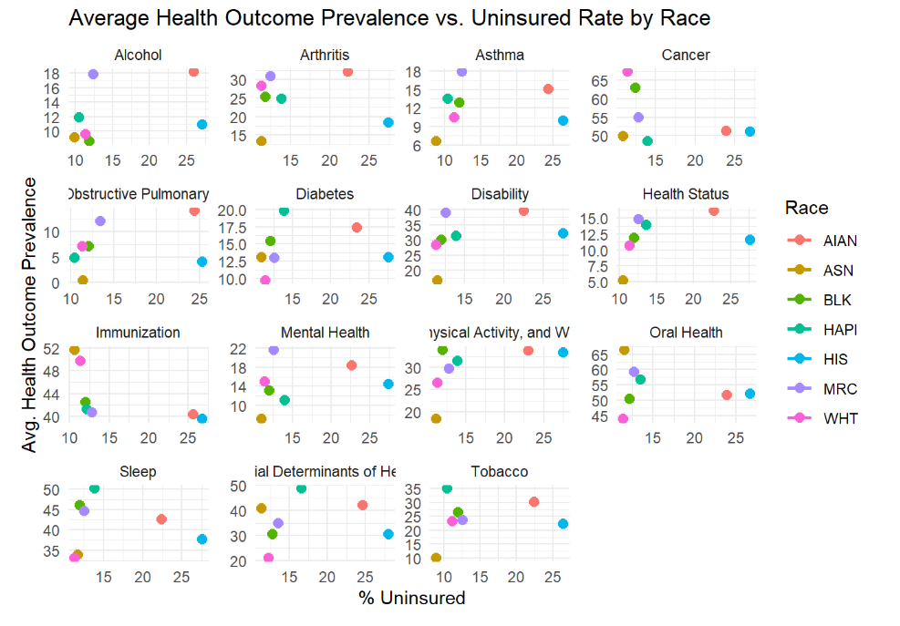

Summary
As we approach the final stages of our project, this week was a chance to reflect on how far we’ve come, address any loose ends, and think more concretely about the Analysis and Big Picture sections of our final deliverable.
We’ve spent the past several weeks working with the CDC’s Chronic Disease Indicators (CDI) dataset, focusing on chronic disease prevalence by race, geography, and other stratifying variables. Along the way, we’ve addressed outliers, inconsistencies in age groups, topic imbalances, and missing data. We’ve also framed our work through the lens of data equity, being mindful of how disparities are interpreted and communicated.
To deepen our analysis, we merged the CDI data with the SAHIE dataset, which provided us with valuable information on health insurance coverage by income, race, and geography. This added an important layer to our exploration, allowing us to investigate not just who experiences worse health outcomes, but how insurance coverage and income levels might affect chronic disease outcomes in various racial and ethnic groups.

This week, we decided to incorporate an additional plot to examine the impact of uninsured rates (from our second dataset) on the prominence of disease by race (using variables from our initial dataset). The resulting figure displays the relationship between the average prevalence of various chronic health outcomes and the percentage of uninsured individuals, grouped by race. Across several outcomes—including disability, diabetes, and arthritis—a noticeable trend emerges: groups with higher uninsured rates, particularly American Indian and Alaska Native (AIAN) and Hispanic populations, often report higher prevalence rates. Conversely, Asian (ASN) individuals consistently report both lower uninsured rates and better health outcomes across most conditions. While not every outcome shows a strong linear trend, the overall pattern suggests that access to health insurance may play a role in shaping disparities in chronic disease prevalence among racial and ethnic groups. This visual provides an important stepping stone toward understanding how structural barriers, like lack of insurance, contribute to unequal health burdens in the U.S.
Additional Analysis
As we look ahead, we’ve identified several possible directions to strengthen our final analysis:
Intersectional Modeling: Now that we have race, income, and insurance status, we can include interaction terms (e.g., Race × Income) in our regression models to explore how disparities compound across identities.
Geographic Patterns: We may explore insurance or disease prevalence by state.
Time Trends (if feasible): Although we’ve focused on 2022, the CDI dataset includes multiple years. If time allows, we may incorporate a time component to observe how disparities have changed over time.
What We Have Left
As we approach the final stretch, our main priorities include finalizing the regression models—particularly those that incorporate interaction terms such as Race × Income or Insurance × Race—to deepen our intersectional analysis. We also plan to select the most compelling visualizations, including maps and scatter plots, to effectively communicate our findings. Writing the Analysis section will be a key next step, where we’ll focus on interpreting statistical results and highlighting patterns in health disparities. We have already begun drafting the Analysis section this week, with plans to finalize it within the next week or so.
In addition, we need to complete the Big Picture section by tying our findings back to broader issues in public health and health equity. On the logistical side, we’ll review and clean up our code to ensure it’s reproducible and well-documented, finalize all written sections of the report—including Methods and Data Cleaning—and begin assembling any presentation materials we may need. Finally, we’ll review everything as a group to ensure clarity and cohesion before submitting the final deliverable.